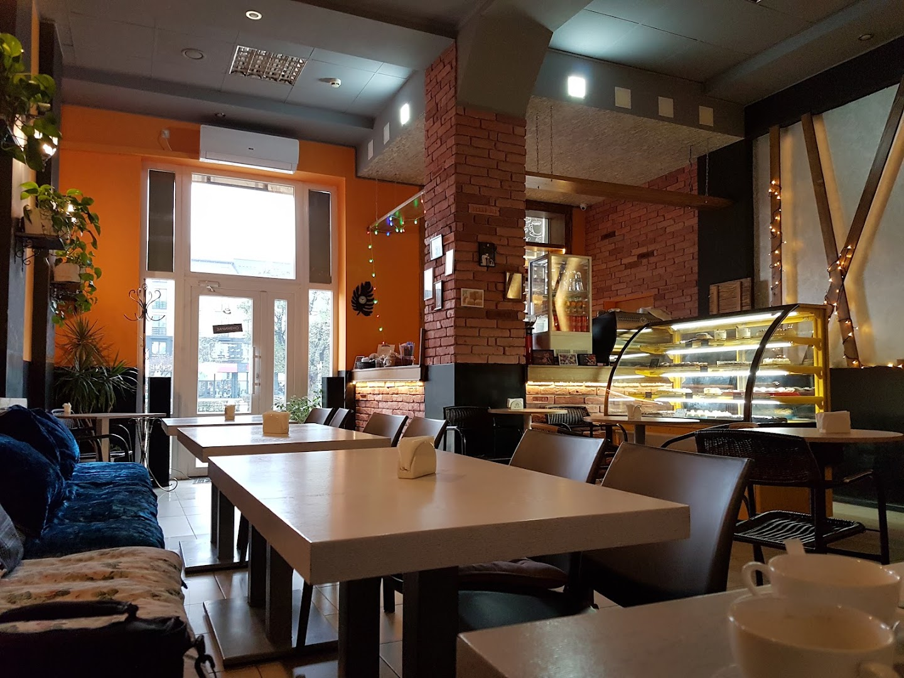

Про нас
Затишний куточок у центрі Калуша
Наша історія та атмосфера
Затишна та стильна кав’ярня «Кориця» розташована в самому серці Калуша на проспекті Лесі Українки, 19 (у приміщенні центральної пошти). Це справжній маленький оазис спокою та насолоди для всіх, хто обожнює справжню ароматну каву та смачні десерти. У нас панує особлива атмосфера тепла та комфорту, де кожен гість може розслабитися після насиченого дня, насолодитися улюбленим напоєм та відпочити від міської метушні.
У нашому меню на вас чекає широкий асортимент кавових напоїв приготованих за класичними та авторськими рецептами, а також свіжа випічка та неперевершені десерти. Ми ретельно підходимо до вибору інгредієнтів, щоб кожна чашка кави дарувала вам насичений смак і гарний настрій на весь день.
«Кориця» — це ідеальне місце для дружніх зустрічей, ранкових ритуалів з улюбленим еспресо чи лате, або затишних вечорів наодинці з цікавою книгою. Завітайте до нас, щоб відчути справжнє задоволення від кавування у friendly-атмосфері нашого закладу.
